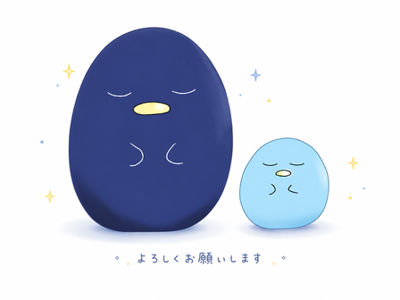

審神者の道具箱をご利用いただき、ありがとうございます。
このページでは、当サイトが扱う情報についてご説明します。
稽古録・資源帳などの各ツールで記録したデータは、お使いの端末のブラウザの中だけに保存されます。管理人のもとへ送られることはなく、管理人が中身を見ることもできません。
Googleドライブ同期をお使いの場合も、保存先はあなたご自身のGoogleドライブです。管理人はそこにアクセスできません。
上とは別に、当サイトではGoogleアナリティクス4（GA4）というサービスを使って、サイトの利用状況を記録しています。
ここで見ているのは、どのページが何回開かれたか、どんな端末やブラウザで見られているか、といったサイト全体の使われ方です。あなたが記録した本丸の中身ではありません。この二つはまったく別のものです。個人を特定する目的で利用することはありません。
この記録には、ブラウザに保存される小さなデータ（Cookie）を使っています。集めた情報はGoogleへ送られ、Googleによって処理・保存されます。Googleが情報をどのように扱うかについては、こちらをご覧ください。
→ Googleのサービスを使用するサイトやアプリから収集した情報のGoogleによる使用どのツールがよく使われているか、どんな画面で見られているかが分かると、次に直すところの見当がつきます。可能でしたら、ご協力いただけますと嬉しいです。

ご希望でない場合は、下のボタンで止めることができます。パソコン・スマートフォン・タブレットのどれでもお使いいただけます。
JavaScriptが無効のため、この切り替えはお使いいただけません。なお、JavaScriptが無効の場合は、アクセス解析も動きません。
この設定はこのブラウザに保存されます。ブラウザのデータを消したときや、別のブラウザ・別の端末をお使いのときは、もう一度設定してください。iPhone・iPadでは、しばらく開かないでいると設定が消えることがあります。
上のボタンを使わずに、ご自身の側で止める方法もあります。
Googleが配布している「Googleアナリティクス オプトアウト アドオン」をブラウザに入れると、そのブラウザからGoogleアナリティクスへ情報が送られなくなります。Chrome・Firefox・Safari・Edgeに対応しています。
→ Googleアナリティクス オプトアウト アドオン正直にお伝えします。上のGoogleのアドオンは、スマートフォンとタブレットには対応していません。Googleは同じ手段を用意していません。
コンテンツブロッカーや、トラッキング防止機能を備えたブラウザを使う方法はありますが、何をどこまで止められるかは製品や設定によって異なり、「これを使えば必ず止まります」と言い切れるものではありません。
スマートフォン・タブレットをお使いの場合は、このページの上にあるボタンをお使いいただくのが確実です。
お問い合わせフォームの送信時に、ご使用のブラウザの種類・OSなどの端末環境情報を収集します。これはバグの再現・調査を目的としたものであり、それ以外の目的には使用しません。
いただいた個人情報（返信用メールアドレス）は、お問い合わせへの対応のみに使用し、第三者への提供は行いません。
→ お問い合わせフォームへ当サイトには、Googleフォーム・X（旧Twitter）などの外部サービスへのリンクがあります。リンク先で扱われる情報については、それぞれのサービスの方針をご確認ください。
また、Googleドライブ同期をご利用の場合は、Googleアカウントへのログインが必要になります。